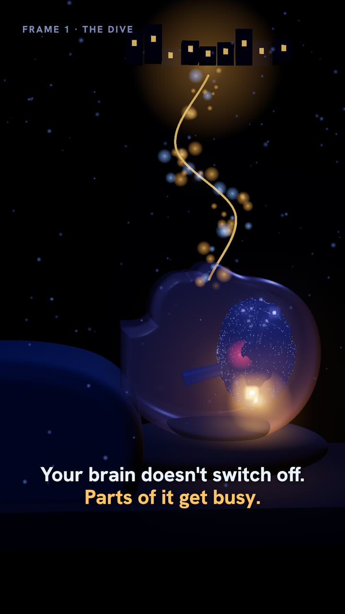
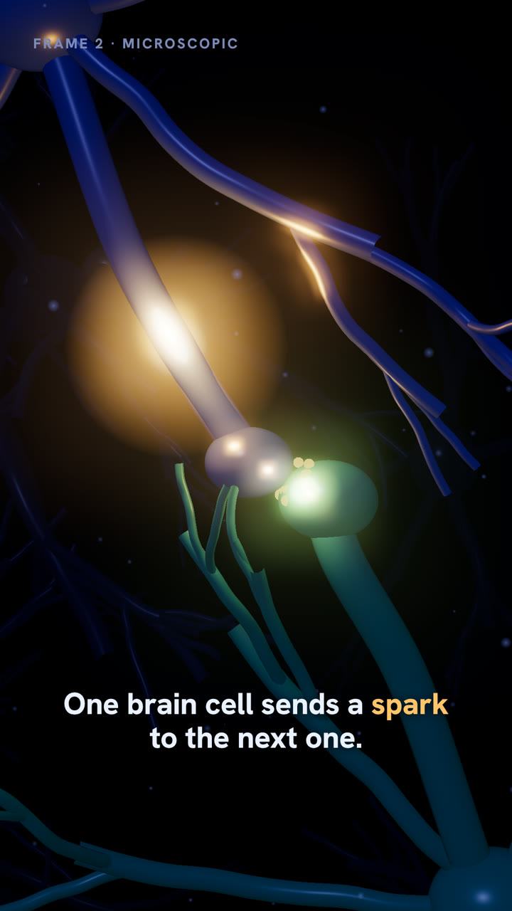
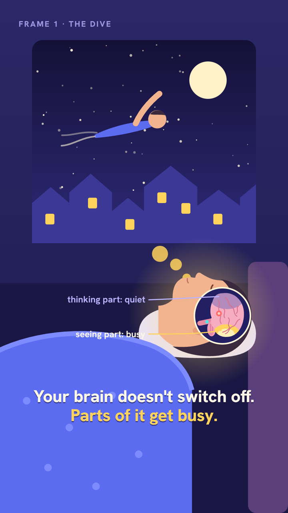
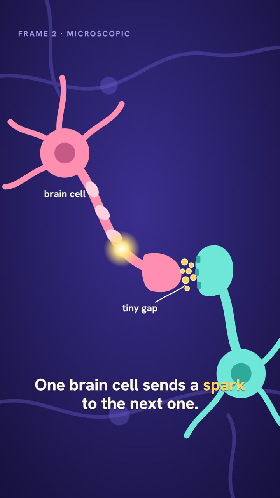
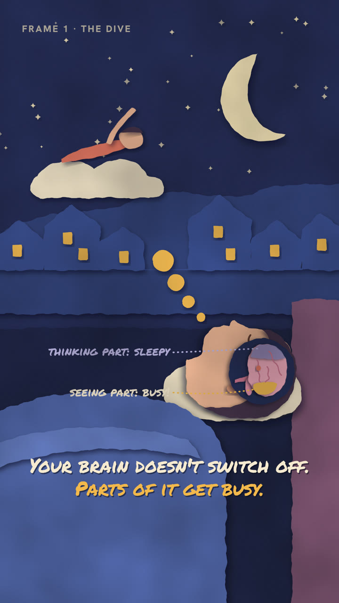
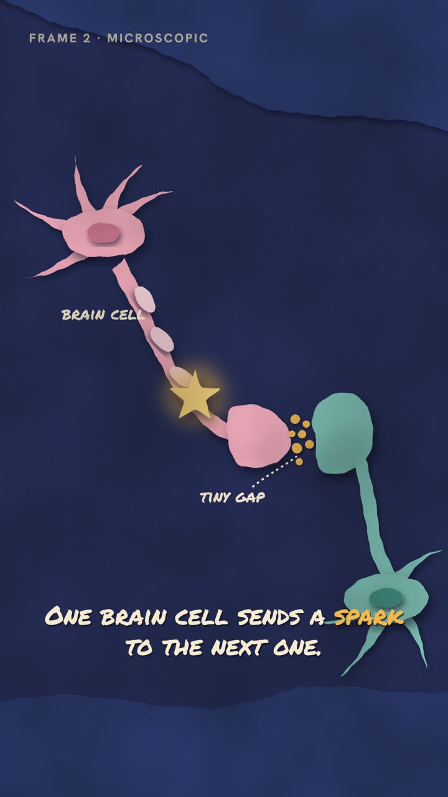
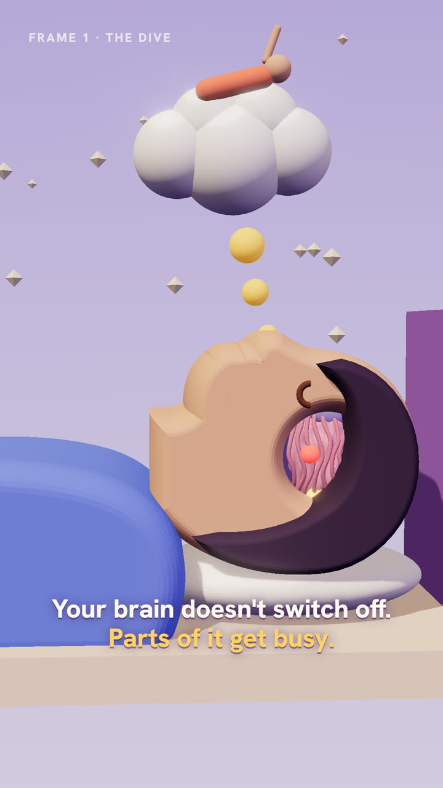
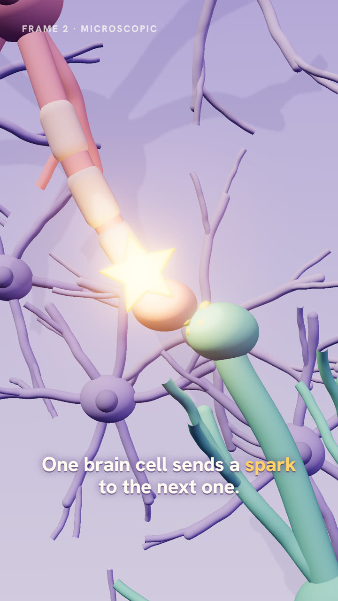

Every style shows the same two moments: frame 1 is the sleeper with his brain showing (the zoom in), frame 2 is the microscopic close-up (one brain cell sending a spark across the gap). These are rough stills to judge the look, not finished shots. The person in each would be built properly once a style is chosen.


Dark, moody, real depth. Brain activity is light; the camera flies from the bedroom down to the cells in one move.


Bright, clean shapes and labels, like a good science cartoon. Every part of the brain gets one colour and keeps it.


Hand-cut paper layers with soft shadows and handwritten labels, like a bedtime picture book that comes to life.


Soft, pastel, plasticine-looking 3D, lit like a toy set. Playful and tactile.